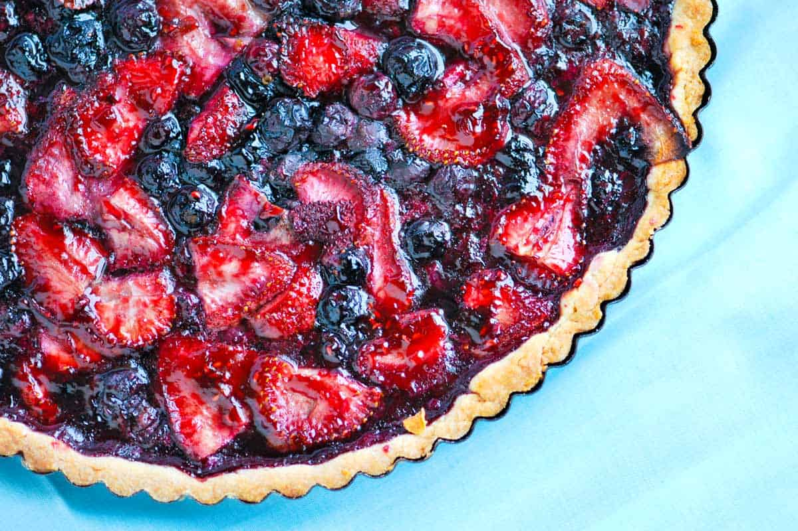

Blueberry Pies for the Win
Blueberry pie is readily made because it does not require pitting or peeling of fruit. It usually has a top and bottom crust. The top crust can be circular, but the pie can also have a crumble crust or no top crust. Blueberry pies are often eaten in the summertime when blueberries are in season in the Northern hemisphere.
Blueberries, both wild ('lowbush') and cultivated ('highbush'), are native to North America. Blueberry pie was first eaten by early American settlers and later the food spread to the rest of the world. Similar desserts are prepared in Europe with bilberries. It remains a popular dessert in the United States and Canada. Blueberry pie made with wild Maine blueberries is the official state dessert of the U.S. state of Maine. Blueberry pie has been documented in the Appledore Cook Book in 1872.
A typical ingredient for blueberry pie are rinsed and stemmed blueberries. The berries can be frozen or fresh. Other ingredients include flour or instant tapioca, cinnamon, nutmeg, sugar, vanilla and butter. Recipes may vary ingredients.
Ingredients
Sweet Tart Dough
- 2 cups all-purpose flour
- 1/2 cup granulated sugar
- 1/4 teaspoon salt
- 10 tablespoons butter
- 2 large eggs
Pie Filling
- 2 cups fresh blueberries
- 1 fresh strawberries
- 1 lime
- 2 tablespoons granulated sugar
- 2 tablespoons all-purpose flour
- Pinch salt
- 1 tablespoon butter
- 2 tablespoons fruit jam
Steps
Make the dough
-
Add the sliced butter and sugar into the food processor and pulse until they are creamed, light and fluffy. Add one egg and the yolk of the second egg, then pulse again until incorporated; reserve the egg white from the second egg until the end in case the dough is too dry.
-
Sift the flour and salt together, then add to the food processor. Pulse until the mixture comes together into a ball. If the mixture will not form into a ball and looks dry after about 30 seconds, add the reserved egg white.
-
Turn out the dough onto plastic wrap and flatten into a disk. Chill in the refrigerator for 20 minutes and up to 2 days. Or freeze well wrapped in plastic wrap and foil up to one month.
Form the Pie
-
Remove tart dough from refrigerator. If it has been refrigerated for more than 20 minutes, you may need to leave it out to warm up slightly until workable.
-
Set a 9-inch or 10-inch tart pan to the side of your work bench. On a lightly floured surface, roll out the dough so that it is slightly larger than the pan, starting from the middle and working out. The dough should be uniform in thickness (about 1/4-inch thick).
-
Roll the dough onto the rolling pin and carefully transfer into the tart pan. Without stretching the dough, lightly press the dough into the bottom and up the sides of the pan. Chill in the refrigerator until filling is ready.
Finish it
-
Heat the oven to 350 degrees F.
-
In a large bowl, toss the blueberries and strawberries with sugar, zest and juice of one lime, and the 2 tablespoons of flour. Spoon into the tart shell then dot pieces of butter over the top.
-
Bake until the tart shell is light golden brown around the edges, 1 hour to 1 hour and 20 minutes. Transfer to a cooling rack and cool until the fruit has set, about 1 hour.
-
Heat the jam in the microwave or small saucepan then use a pastry brush to brush the warmed jam over the top of the tart. Serve with ice cream or whipped cream.
Return Home
Return to Top